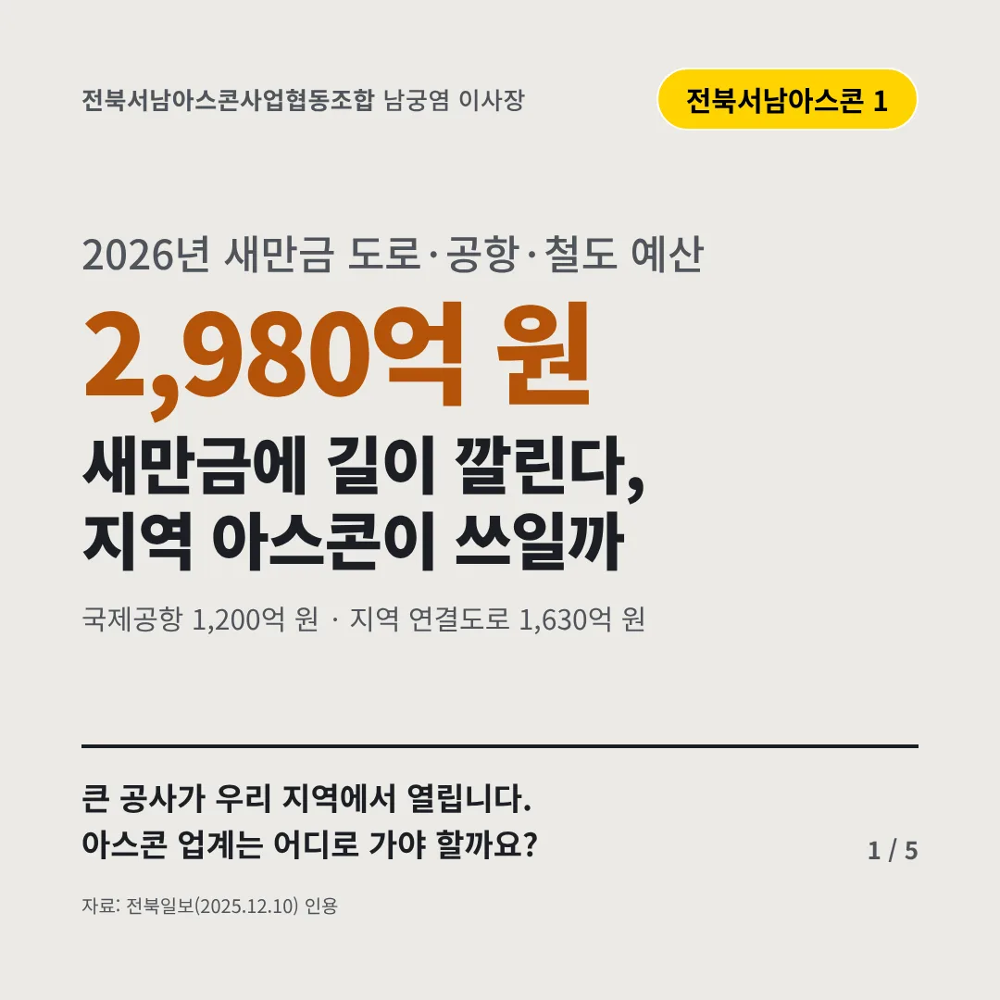
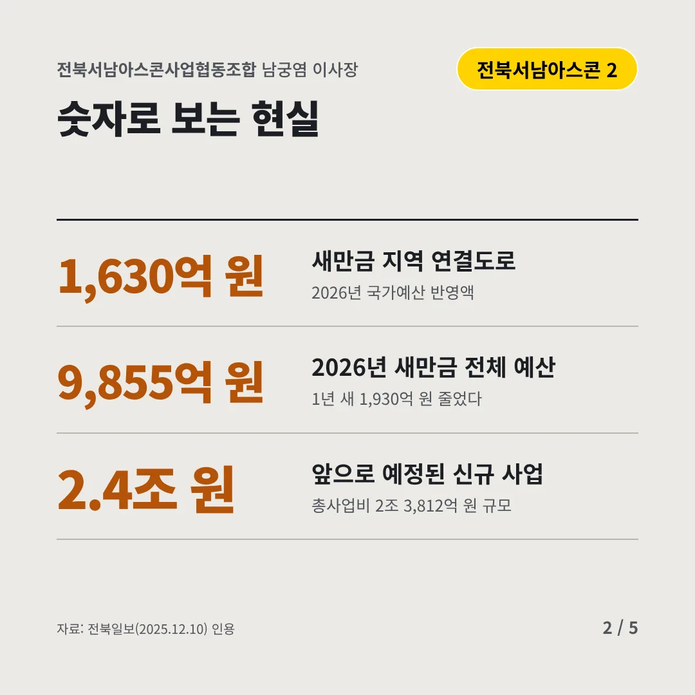
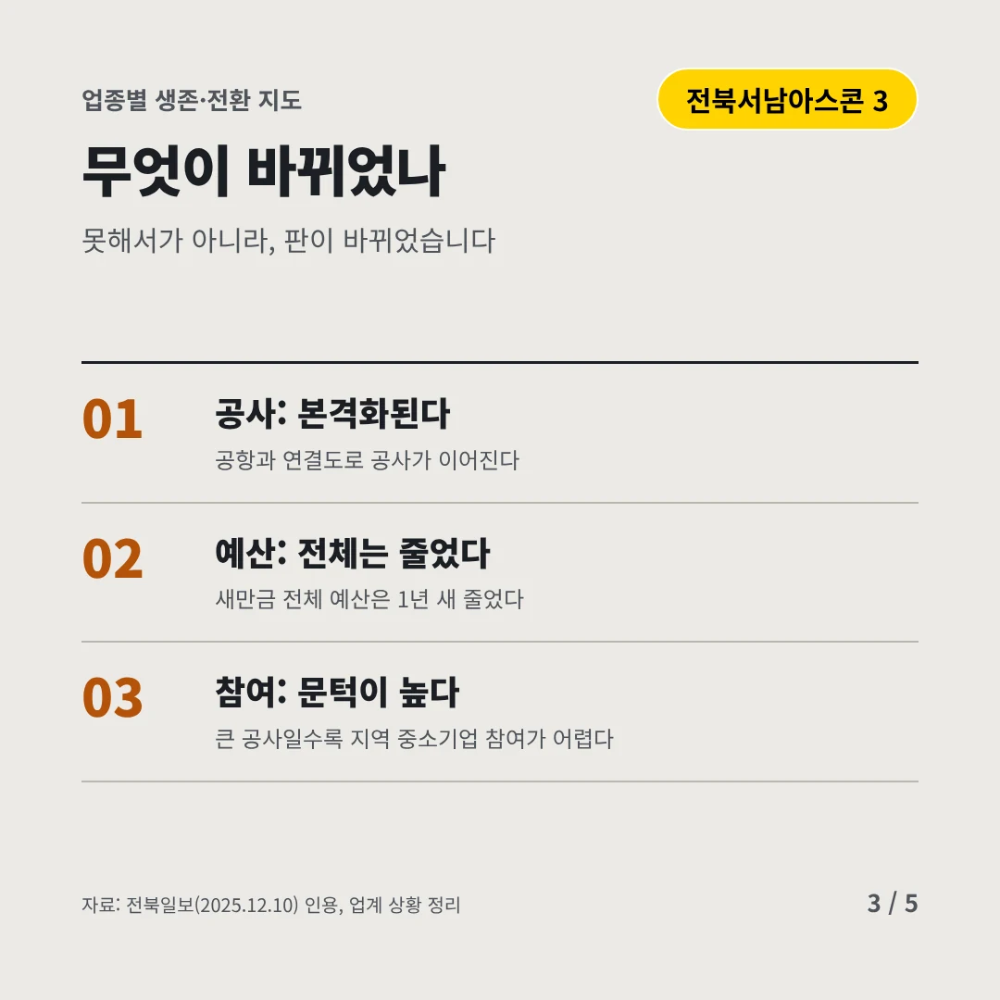
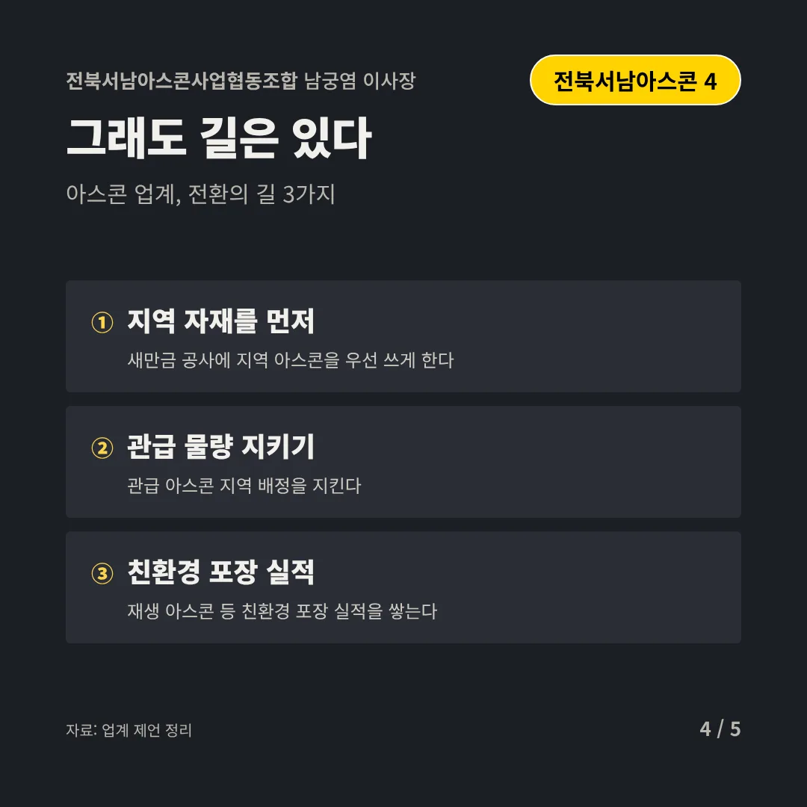
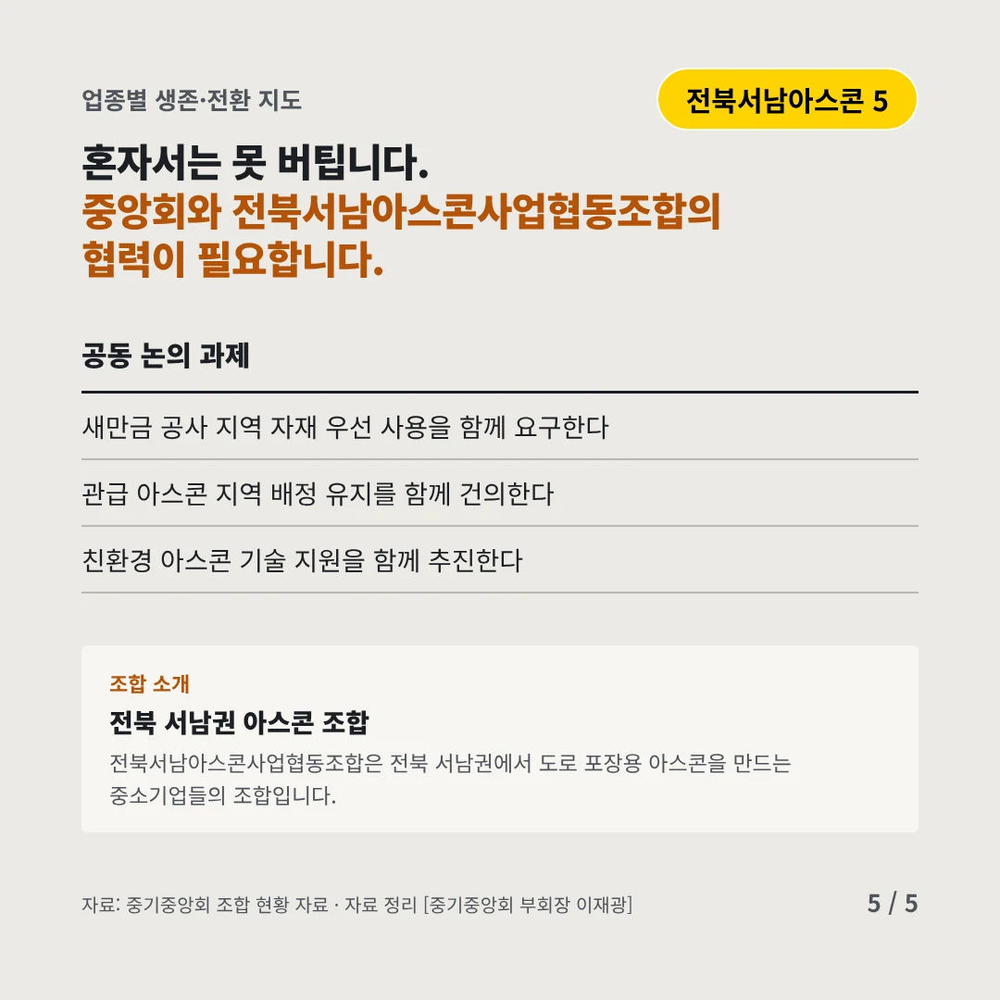
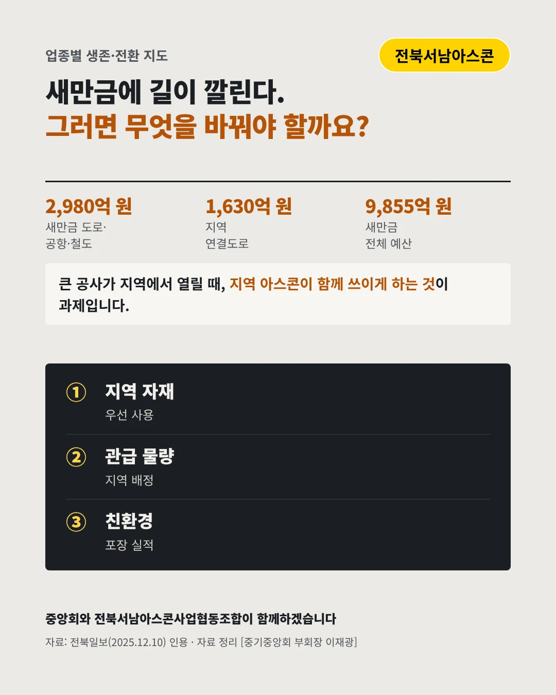

전북서남아스콘사업협동조합남궁염 이사장
새만금에 길이 깔린다, 지역 아스콘이 쓰일까
2,980억 원 2026년 새만금 도로·공항·철도 예산






큰 공사가 우리 지역에서 열립니다. 아스콘 업계는 어디로 가야 할까요?
숫자로 보는 현실
- 1,630억 원새만금 지역 연결도로2026년 국가예산 반영액
- 9,855억 원2026년 새만금 전체 예산1년 새 1,930억 원 줄었다
- 2.4조 원앞으로 예정된 신규 사업총사업비 2조 3,812억 원 규모
무엇이 바뀌었나
- 공사: 본격화된다공항과 연결도로 공사가 이어진다
- 예산: 전체는 줄었다새만금 전체 예산은 1년 새 줄었다
- 참여: 문턱이 높다큰 공사일수록 지역 중소기업 참여가 어렵다
그래도 길은 있다
- 지역 자재를 먼저새만금 공사에 지역 아스콘을 우선 쓰게 한다
- 관급 물량 지키기관급 아스콘 지역 배정을 지킨다
- 친환경 포장 실적재생 아스콘 등 친환경 포장 실적을 쌓는다
한 장 요약

조합 소개
전북서남아스콘사업협동조합은 전북 서남권에서 도로 포장용 아스콘을 만드는 중소기업들의 조합입니다.
자료: 전북일보(2025.12.10)